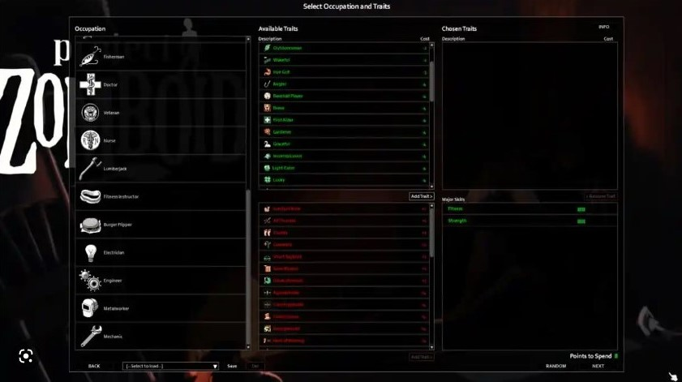
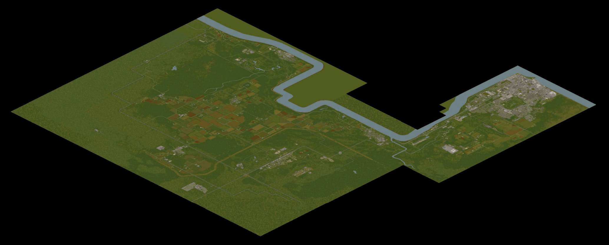
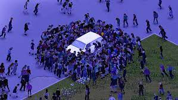
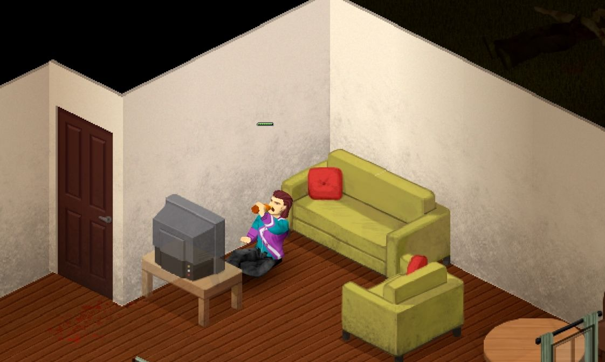

The Ultimate Survival Game
Project Zomboid is the ultimate zombie survival RPG game that someone can have. It is most known due to it's insane realism. Whether you want to cook your frozen chicken at five-hundred degrees to making sure that your character is holding a tissue when they're feeling blue.
You must learn how to survive with anything that this new life gives to you. You must also learn when to fight and when to run. You can build your own base of operations where you and your friends can plan a supply run.
Surprisingly nearly ten years after its release. It is still an early access game and is still updated frequently by the developers at The Indie Stone. A great feature in this game is the workshop where you can find thousands of mods that can amplify your game play. Some examples are that you can add more weapons, locations, items, zombies, building options, and tons more.
To learn more about the game and its price if you are interesed in purchasing it. I highly recommend that you check out Project Zomboid's official web page.
- Several occupancies and tons of positive and negative traits to choose from
- Explore the locations found in a isometric Kentucky that is ever-growing (yes the map is that big)
- Prepare yourself to face thousands of zombies where your life will be at risk
- Make sure your survivor is healthy and happy